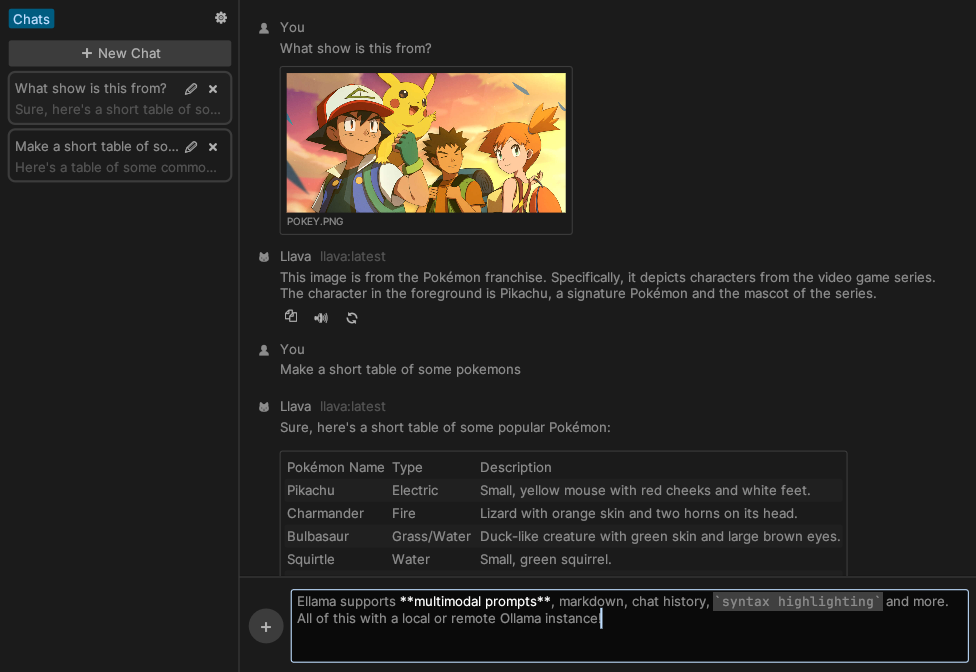
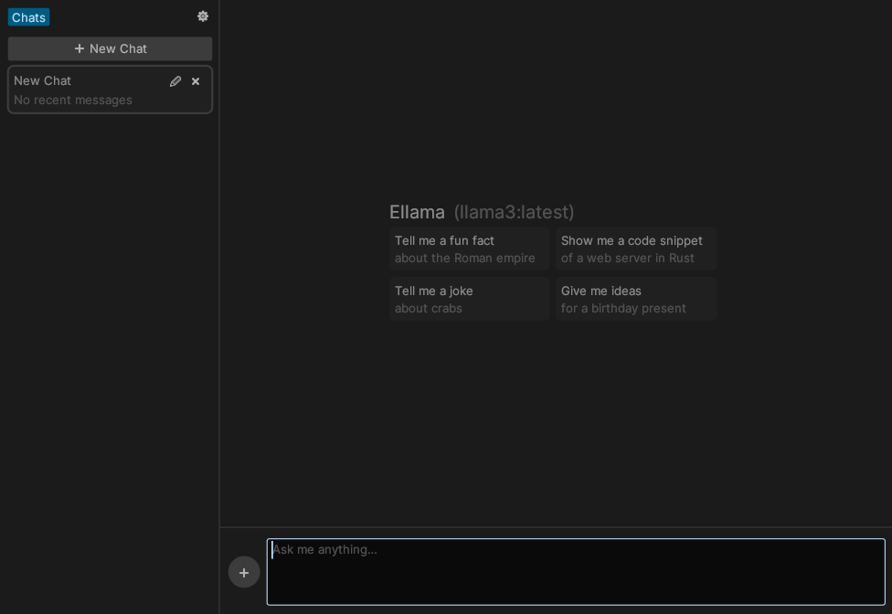
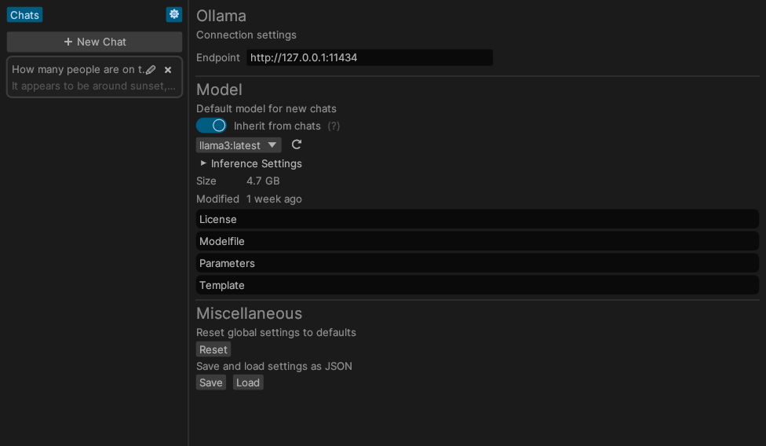

ellama
Install 0.4.0
Published on May 11 2025 at 10:08 UTC
ü¶ô Ellama 
Ellama is a friendly interface to chat with a local or remote Ollama instance.

Features
- Chat History: create, delete and edit model settings per-chat.
- Multimodality: easily use vision capabilities of any multimodal model, such as LLaVA.
- Ollama: no need to install new inference engines, connect to a regular Ollama instance instead.
- Resource Efficient: minimal RAM and CPU usage.
- Free: no need to buy any subscriptions or servers, just fire up a local Ollama instance.
Quickstart
- Download the latest Ellama release from the Releases page.
- or build & install from source:
$ git clone https://github.com/zeozeozeo/ellama.git $ cd ellama $ cargo install --path .
- or build & install from source:
- In the Settings ⚙️ tab, change the Ollama host if needed (default is
http://127.0.0.1:11434) - In the same tab, select a model that will be used for new chats by default. Ellama will try to select the best model on the first run.
- Close the Settings tab, create a new chat by pressing the "➕ New Chat" button, and start chatting!
- To add images, click the ➕ button next to the text field, drag them onto Ellama's window, or paste them from your clipboard.
[!NOTE] By default, Ellama will build with the
ttsfeature OFF. If you need TTS, build withcargo build --features tts.Note that on Linux, this requires
libspeechd(libspeechd-dev) to be installed. TTS is currently not enabled in release builds because of this (cross-compilation complications), see https://github.com/zeozeozeo/ellama/issues/71
Gallery




Wishlist
These features are not yet present in Ellama, but they would be nice to have:
- Support OpenAI-Compatible APIs: currently only has Ollama support
- A "Notes" section, where you can edit and write LLM-assisted notes
- Publish on crates.io: currently still relies on some git dependencies
License
Unlicense OR MIT OR Apache-2.0